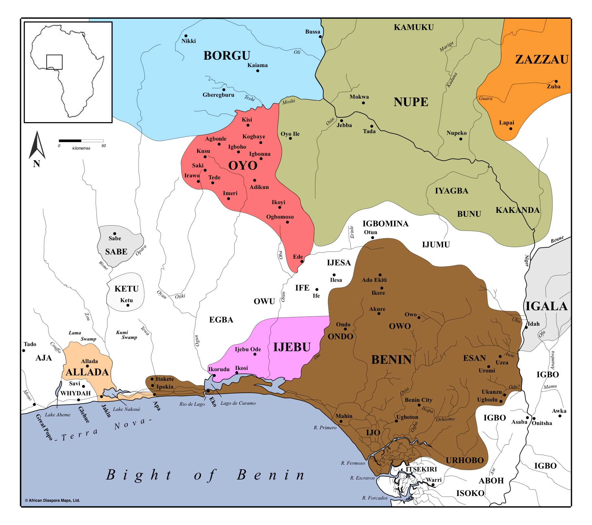
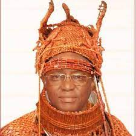

INTRODUCTION

The Kingdom of Benin, located in present-day southern Nigeria, thrived from the 13th to the 19th
century. Renowned for its sophisticated bronze sculptures and intricate ivory carvings, Benin was a powerful
and highly organized state with a complex system of governance led by a divine king, or Oba. Its wealth was
largely derived from trade in ivory, spices, and later, slaves. Despite European colonial interference in
the late 19th century, Benin's rich cultural heritage endures, influencing contemporary Nigerian society and
attracting worldwide interest in its art and history.
Benin's society was structured around a hereditary monarchy, with the Oba at its apex, revered as both
a political and spiritual leader. The kingdom's capital,named Edo, was a hub of artistic
innovation and cultural exchange, showcasing the kingdom's artistic prowess and economic prosperity to
visitors from across Africa and beyond.
THE FOUNDING DYNASTIES: SKY KINGS AND DIVINE KINGS

Prior to the rule of the divine Obas, the people of Edo were ruled by a line of kings called the Ogisos, or
"Sky Kings". Also described as semi-divine figures with each ruler possessing both political and spiritual
authority, according to oral tradition and mythological accounts, the Ogisos are said to have ruled for
around seven centuries, from approximately the 11th century BC to the 13th century AD. While the historical
accuracy of the Ogiso dynasty is debated among scholars, their legacy remains significant in Edo oral
tradition and cultural heritage. They are often credited with laying the foundation for the subsequent
establishment of the Oba dynasty, which would govern the Kingdom of Benin for centuries to come. The
transition from the Ogiso to the Oba dynasty is traditionally attributed to Eweka I, who is said to have
overthrown the last Ogiso ruler and established himself as the first Oba of Benin.
Pictured to the right is the current Oba of Benin: Oba Ewuare II, coronated in 2016.
Under the Oba dynasty, Edo City flourished as the capital of a powerful and highly organized state. The
kingdom expanded its influence through trade, diplomacy, and military conquests, becoming a prominent
regional power by the 15th century. The Oba of Benin wielded both political and spiritual authority,
governing with the assistance of a council of chiefs and priests.
Throughout its history, the Kingdom of Benin was renowned for its rich cultural heritage, including its
distinctive bronze sculptures, ivory carvings, and intricate artwork. Edo City served as a center of
artistic innovation and economic prosperity, attracting traders, artisans, and scholars from across West
Africa and beyond.
Despite facing various challenges, including conflicts with neighboring states and European colonial
encroachment in the late 19th century, the Kingdom of Benin maintained its cultural identity and resilience.
Today, Edo City stands as a testament to the enduring legacy of the Benin Kingdom, with its vibrant culture
and rich history continuing to shape the identity of the region and inspire admiration worldwide.
Pages:
2
3